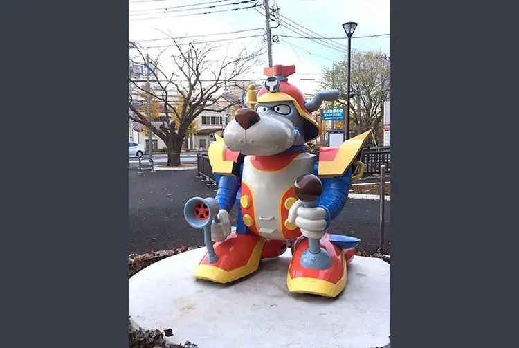
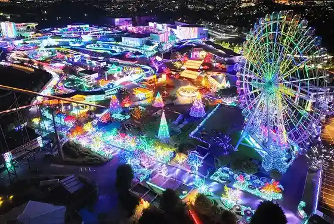
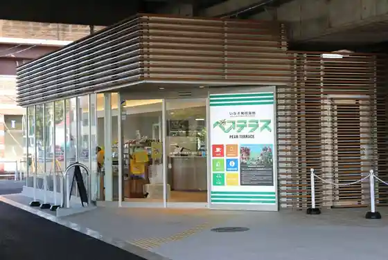
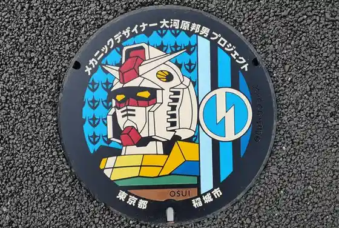

Inagi, Tokyo: things to do, food and stays
Inagi · Tokyo
Inagi
Highlighted on the Tokyo map.

Sights
Monument of Yatterwan from Yatterman
Scopedog Monument from the Anime Armored Trooper Votoms (Inagi-Naganuma Station)
Yomiuri Land

Inagi Hasshin Kichi Peaterasu

Mekanikkudezainmanhoru

(Onekan Senshi Inagi Pedarion) Monyumento (Inagi Chuo Park)
(Kidosenshi Gan Dam) Ni Tojo Suru (Gan Dam) Oyobi (Zaku) no Monyumento
Dining
Baigetsu
梅月

Seafood restaurant in Inagi, Tokyo.
Inagi Taishoken Goichi
稲城 大勝軒 五一

Noodle restaurant in Inagi, Tokyo.
chuukasobashibahe
中華そば シバヘー

Noodle restaurant in Inagi, Tokyo.
Bishoku no Kiwami
美食ノ極

Japanese restaurant in Inagi, Tokyo.
Ramen Shop Inagi ten
ラーメンショップ 稲城店

Noodle restaurant in Inagi, Tokyo.
ZEBRA Coffee&Croissant Inagi chuuou kouen ten
ZEBRA Coffee&Croissant 稲城中央公園店

Cafe in Inagi, Tokyo.
Akariya Kosen
あかりや弧仙

Noodle restaurant in Inagi, Tokyo.
Kuma Ooji
熊大路

Noodle restaurant in Inagi, Tokyo.
Sanraiken
三来軒

Noodle restaurant in Inagi, Tokyo.
Nikomi Tateishi
煮込 立石

Japanese restaurant in Inagi, Tokyo.
Taiseiken
大盛軒

European restaurant in Inagi, Tokyo.
Yomiuri Golf Club Restaurant
よみうりゴルフ倶楽部レストラン

Chinese or Asian restaurant in Inagi, Tokyo.
Tokyo Yomiuri Country Club
東京よみうりカントリークラブ

Japanese restaurant in Inagi, Tokyo.
Chinese Shinpa Ryori Tenan
中国新派料理 天安

Chinese or Asian restaurant in Inagi, Tokyo.
Ryuka
龍華

Noodle restaurant in Inagi, Tokyo.
JILL's BURGER

Izakaya or bar in Inagi, Tokyo.
CrossCoffee chocolate&sandwiches
クロスコーヒー チョコレートアンドサンドウィッチズ

Cafe in Inagi, Tokyo.
Daitou En
大東苑

Meat restaurant in Inagi, Tokyo.
Ortorana
オルトラーナ

European restaurant in Inagi, Tokyo.
Nakamura
なかむら

Noodle restaurant in Inagi, Tokyo.
Ari no Mi
有の実

Meat restaurant in Inagi, Tokyo.
Tama Country Club Restaurant
多摩カントリークラブレストラン

Noodle restaurant in Inagi, Tokyo.
Ogawa Ken Hirao ten
小川軒 平尾店

Noodle restaurant in Inagi, Tokyo.
Fukuju-an
福寿庵

Noodle restaurant in Inagi, Tokyo.
Mesburn
メズバーン

Chinese or Asian restaurant in Inagi, Tokyo.
Soba to Kanmi Sakura
蕎麦と甘味 さくら

Noodle restaurant in Inagi, Tokyo.
Inagi SATOYAMA Kitchen Honten
いなぎ SATOYAMA キッチン 本店

European restaurant in Inagi, Tokyo.
Nagasaki Ramen Saikai Inagi wakabadai ten
長崎らーめん 西海製麺所 稲城若葉台店

Noodle restaurant in Inagi, Tokyo.
Yano Ken Reservation
やのけん

Noodle restaurant in Inagi, Tokyo.
GoodDay Yomiuri rando
グッディ 読売ランド

Noodle restaurant in Inagi, Tokyo.
Udon Maruki
うどん 丸喜

Noodle restaurant in Inagi, Tokyo.
Inashiro Yakiniku Seisakujo
稲城焼肉製作所

Meat restaurant in Inagi, Tokyo.
Yakiniku Sandaimon
焼肉三大門

Meat restaurant in Inagi, Tokyo.
Robson Fries
ロブソンフライズ

European restaurant in Inagi, Tokyo.
Inagi Yoroshiku Zushi
稲城 ヨロシク寿司

Seafood restaurant in Inagi, Tokyo.
Dining kitchen Elz
ダイニングキッチン エルツ

Noodle restaurant in Inagi, Tokyo.